Hello, I'm Tâm Như! 👾
MSSV: 24090427
Đơn vị: Công nghiệp văn hoá và di sản (VNU-SIS)
Chào mừng đến với không gian lưu trữ số cá nhân. Dữ liệu này vạch ra lộ trình minh chứng hóa quá trình vận dụng công nghệ thông tin và AI tạo sinh vào nghiên cứu khoa học, đặc biệt trong việc phân tích lý thuyết tài sản thương hiệu điểm đến và quản trị văn hóa.
📚 NHẬT KÝ DỰ ÁN
💻 DỰ ÁN 1: Quản trị Tài nguyên Số (macOS)
🎯 Mục tiêu: Tối ưu hóa không gian lưu trữ tài liệu nghiên cứu trên hệ điều hành macOS nhằm đẩy nhanh tốc độ truy xuất dữ liệu.
⚙️ Quá trình hoàn thiện: Thiết lập cấu trúc thư mục phân cấp 3 tầng logic, chuẩn hóa quy tắc đặt tên tệp tin không dấu.
🌟 Bài học rút ra: Tổ chức dữ liệu minh bạch là nền tảng tối quan trọng trước khi triển khai bất kỳ dự án công nghệ phức tạp nào. Giảm thiểu 100% tình trạng thất lạc tài liệu.
🖼️ Output Visualization:

🔍 DỰ ÁN 2: Thẩm định Dữ liệu Học thuật
🎯 Mục tiêu: Khai thác và thẩm định chất lượng dữ liệu học thuật trên môi trường số phục vụ cho đề tài "Nghiên cứu sức ảnh hưởng của độ nhận diện tới sức hút du lịch".
⚙️ Quá trình hoàn thiện: Vận dụng hệ toán tử tìm kiếm nâng cao (AND, OR, site:, filetype:). Áp dụng chuẩn đánh giá CRAAP phân tích 10 nguồn tài liệu quốc tế (chuẩn APA 7th).
🌟 Bài học rút ra: Kỹ năng phân tích nguồn tin giúp loại bỏ các "ảo giác dữ liệu", duy trì tư duy phản biện sắc bén và bảo vệ tính liêm chính cho nghiên cứu.
📊 Bảng đánh giá CRAAP:
| Hạng | Tên tài liệu (Nguồn) | Đánh giá giá trị ứng dụng |
|---|---|---|
| 1 | Does world heritage list really induce more tourists? (2012) | Mô hình kinh tế lượng siêu nghiêm ngặt chứng minh hiệu ứng ngắn hạn của UNESCO. |
| 2 | The Overlooked Contribution of National Heritage Designation... (2022) | So sánh trực tiếp giá trị danh hiệu Di sản Quốc gia đối với hình ảnh thành phố. |
| 3 | Tác động của tương đồng hình ảnh đến tài sản thương hiệu điểm đến (2023) | Kỹ thuật thống kê nâng cao chứng minh tác động tâm lý. |
| 4 | Tác động của trải nghiệm đa chiều và nhận diện thương hiệu (2025) | Ứng dụng PLS-SEM giải mã vai trò trải nghiệm trí tuệ. |
| 5 | Destination image branding for world heritage sites (2024) | Phương pháp luận mới về AI và GIS định vị bản đồ cảm xúc từ Big Data. |
| 6 | Loyalty in Heritage Tourism: The Case of Córdoba (2020) | Cảnh báo nguy cơ thương mại hóa làm mất bản sắc đô thị cổ từ Châu Âu. |
| 7 | Tác động của trải nghiệm thương hiệu điểm đến trên MXH (2024) | Vai trò trung gian của "sự chân thực thương hiệu" trên mạng xã hội. |
| 8 | Destination Brand Equity of Cultural Destination: Hue City (2024) | Thang đo CBBE tiêu chuẩn khảo sát thực tế khách trải nghiệm di sản. |
| 9 | Exploring the Factors Influencing Heritage Tourism... (2023) | Hệ thống hóa khoa học nhân tố vĩ mô dựa trên quy trình lọc tài liệu SLR. |
| 10 | Tài sản thương hiệu điểm đến: Góc nhìn từ cơ sở lý luận (2016) | Tài liệu lý luận gốc hệ thống hóa toàn bộ định nghĩa kinh điển. |
💬 DỰ ÁN 3: Tối ưu hóa Kỹ nghệ Câu lệnh
🎯 Mục tiêu: Cải thiện chất lượng phân tích văn bản của AI, hạn chế ảo giác (hallucination) khi xử lý các học thuyết phức tạp.
⚙️ Quá trình hoàn thiện: Thực nghiệm đối chiếu 3 cấp độ câu lệnh. Áp dụng kỹ thuật Role Prompting, Chain-of-thought và Few-shot Examples để bóc tách tài liệu học thuật.
🌟 Bài học rút ra: Rút gọn 60% thời gian xử lý dữ liệu thô. Giá trị đầu ra của AI tỷ lệ thuận với tính cụ thể (Specificity) và bối cảnh (Context) do con người cung cấp.
🖼️ Prompt Engineering (Kéo ngang):
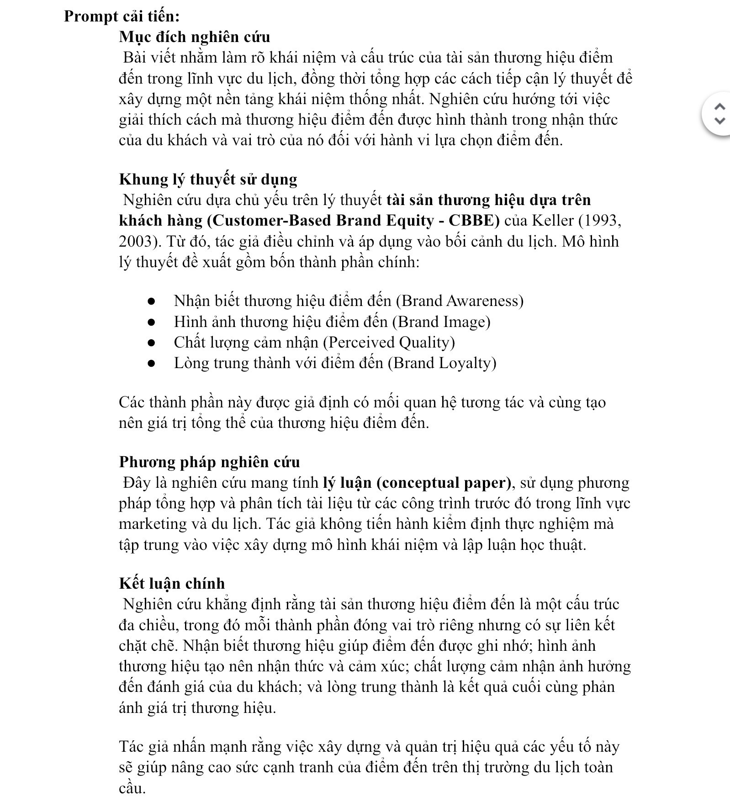
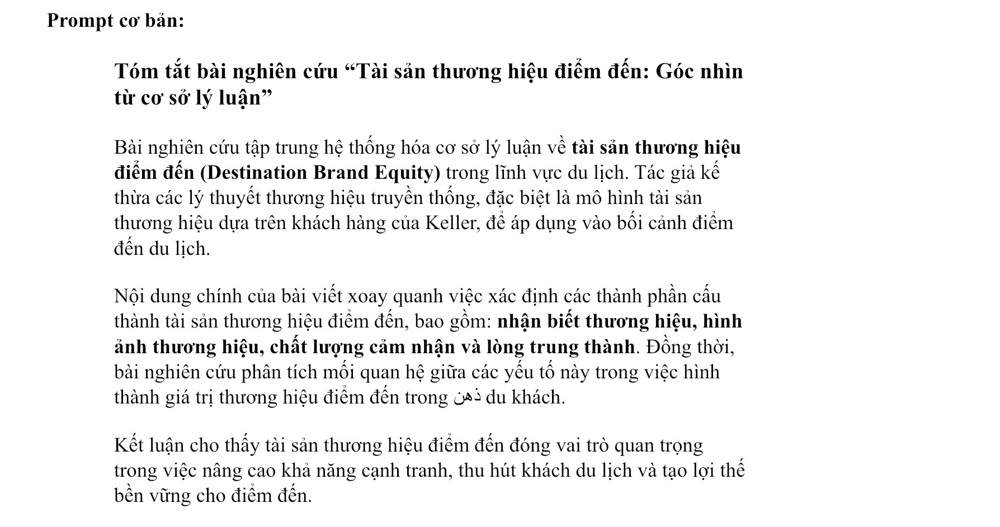
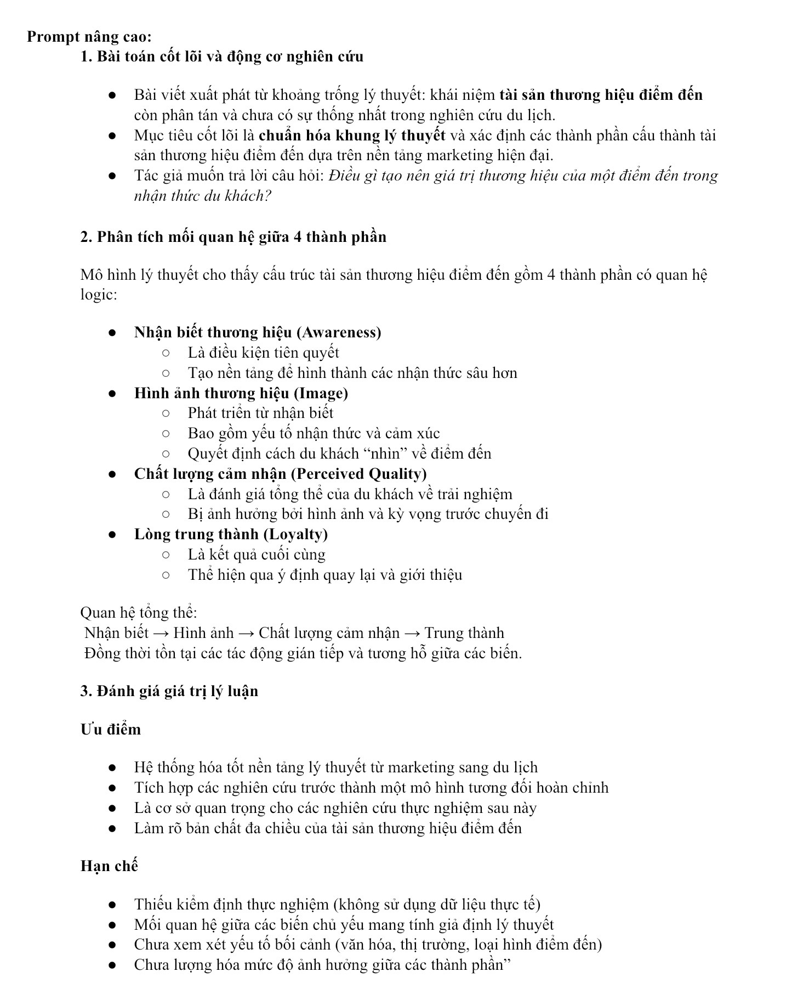
🤝 DỰ ÁN 4: Quản trị Dự án Hợp tác Trực tuyến
🎯 Mục tiêu: Điều phối quy trình làm việc nhóm từ xa, đảm bảo tính đồng bộ dữ liệu cho dự án nhóm.
⚙️ Quá trình hoàn thiện: Tích hợp Messenger (ghim tiến độ), Google Drive (thư mục 3 cấp), Google Docs (Document Outline phân vùng soạn thảo).
🌟 Bài học rút ra: Đồng bộ hệ sinh thái số mượt mà giúp tỷ lệ đè lấp dữ liệu được kiểm soát ở mức 0%. Hiệu suất làm việc nhóm từ xa phụ thuộc vào việc xây dựng quy chuẩn điều phối thay vì độ phức tạp của phần mềm.
🖼️ Workflow System (Kéo ngang):
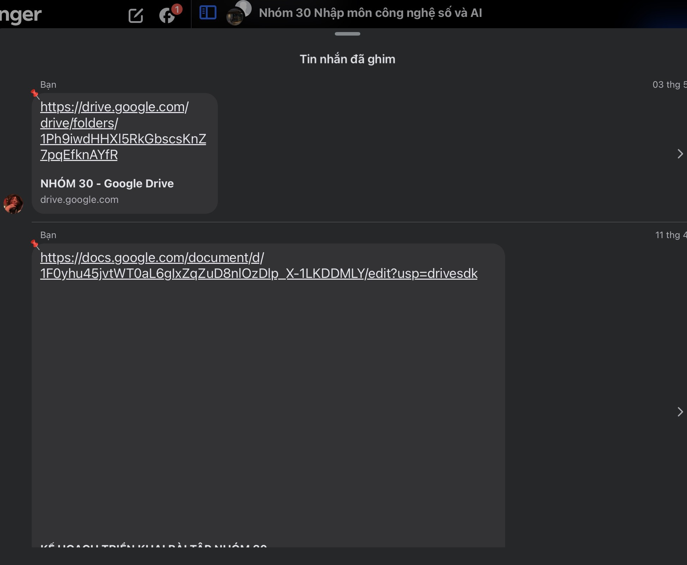
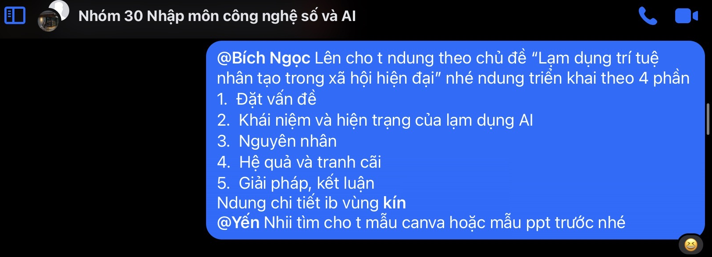
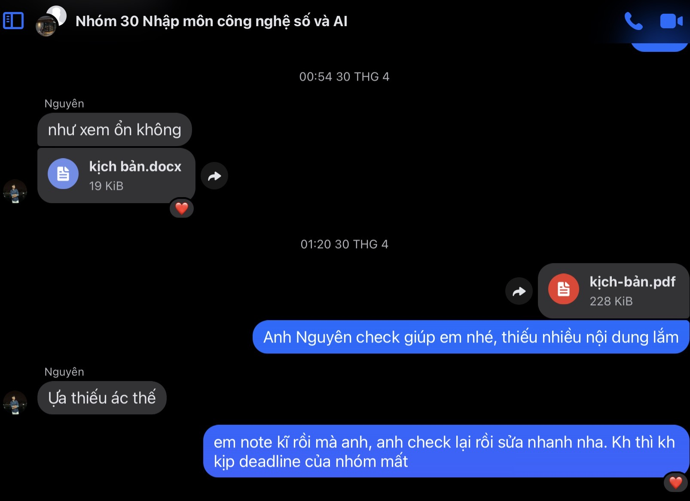
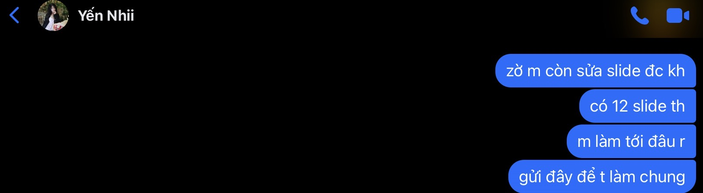
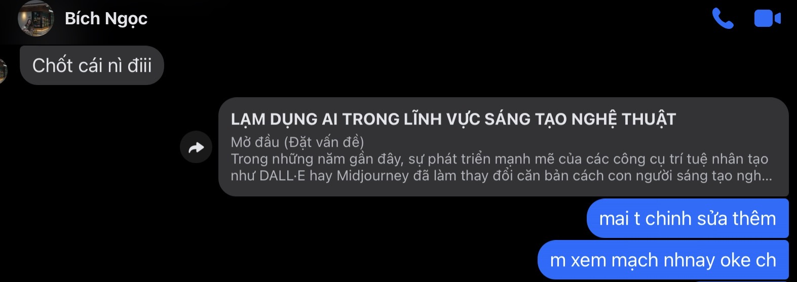
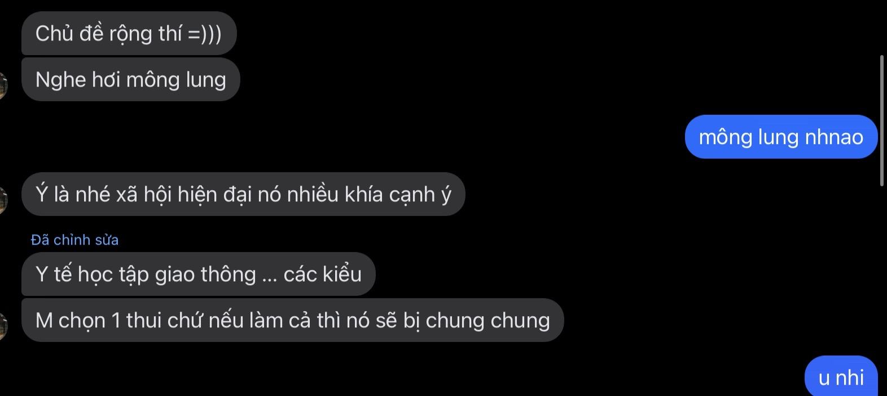
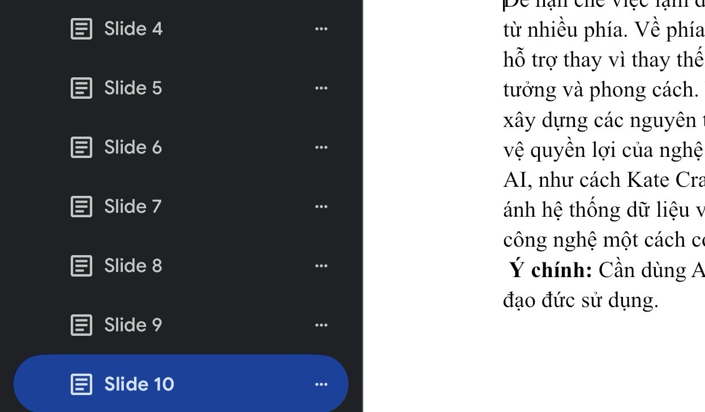
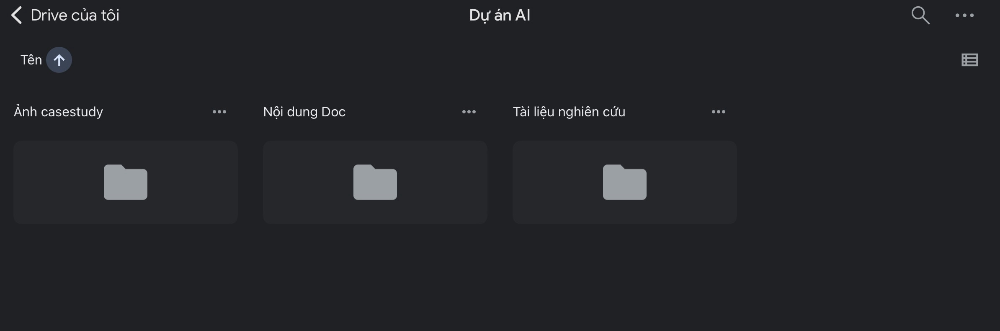
🎨 DỰ ÁN 5: Sáng tạo Nội dung & Thiết kế Ấn phẩm
🎯 Mục tiêu: Sản xuất kịch bản 12 slide thuyết trình phản biện đề tài "Lạm dụng AI trong sáng tạo nghệ thuật".
⚙️ Quá trình hoàn thiện: Vận hành chuỗi AI: NotebookLM (trích xuất) -> ChatGPT (chuyển văn phong) -> Gemini (cô đọng hiển thị). Can thiệp thủ công làm sạch watermark và lỗi thị giác.
🌟 Bài học rút ra: AI giải phóng 80% sức lao động định dạng cơ học, nhưng 20% tư duy cốt lõi về tính nguyên bản và thẩm định giá trị đạo đức thuộc về con người.
🤖 BEFORE: Bản nháp thô từ AI (AI Draft)


✨ AFTER: Bản hoàn thiện (Human Final)


⚖️ DỰ ÁN 6: Khung Đạo đức Trí tuệ Nhân tạo
🎯 Mục tiêu: Thiết lập ranh giới ứng dụng công nghệ số an toàn, bảo vệ tính liêm chính học thuật trong kỷ nguyên số.
⚙️ Quá trình hoàn thiện: Nghiên cứu chính sách quản lý học thuật tại VNU-SIS, trực tiếp phát hiện và chỉnh sửa các lỗi thuật ngữ do AI tạo ra. Sản xuất Infographic trực quan.
🌟 Bài học rút ra: Thiết lập thành công "Bộ 5 nguyên tắc sử dụng AI" cá nhân. Lạm dụng công nghệ làm suy thoái năng lực tư duy phản biện, giữ vững liêm chính học thuật là cách duy nhất bảo vệ năng lực cốt lõi.
🖼️ Ethical Protocol (Infographic):
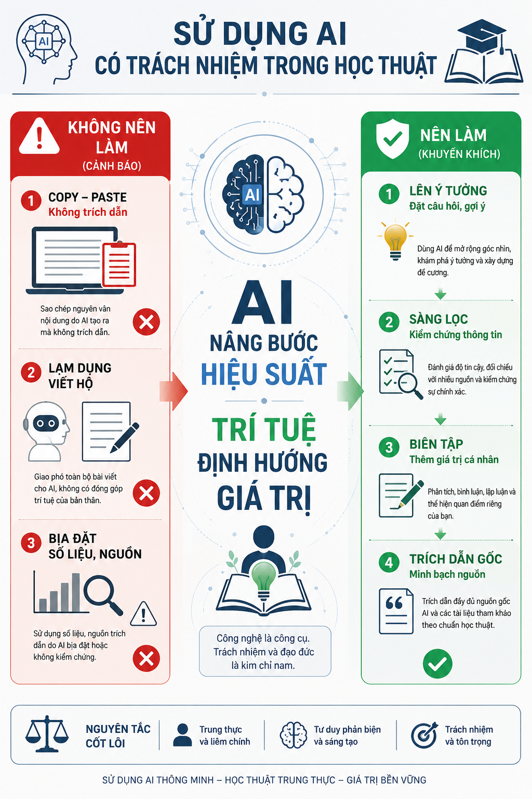
📰 DỰ ÁN 7: Dùng LLM Phân tích Mâu thuẫn Xã hội
🎯 Mục tiêu: Triển khai LLM phân tích 2 nguồn báo chí để lập mô hình mâu thuẫn xung đột 3 bên liên quan đến đất đai di sản.
⚙️ Quá trình hoàn thiện: Cung cấp dữ liệu từ Luật Khoa Tạp chí và Boxit VN cho LLM. Ép AI thực hiện phân loại thực thể và cấu trúc hóa hệ lụy bằng kỹ thuật Chain-of-thought.
🌟 Bài học rút ra: Hệ thống hóa thành công 4 lớp "chi phí xã hội vô hình". Sự phát triển kinh tế thương mại sẽ trở nên vô nghĩa nếu đánh đổi bằng việc tước đoạt không gian sinh tồn của cộng đồng bản địa.
📊 Bảng so sánh lăng kính tiếp cận:
| Tiêu chí | Luật Khoa Tạp chí | Boxit Việt Nam |
|---|---|---|
| Lăng kính | Nhân văn, Văn hóa và Tâm linh. Tập trung vào "phần hồn" của đời sống làng xã. | Kinh tế chính trị, Quy hoạch. Cơ chế vận hành dòng vốn, chính sách đất đai. |
| Tiêu điểm | Di dời mồ mả tổ tiên làm rạn nứt căn tính văn hóa, lòng tự trọng của dân. | Xung đột giữa dự án giải trí cao cấp với không gian sinh sống, tư liệu sản xuất. |
| Lập luận | Tư duy triết học định lượng các "chi phí xã hội vô hình". | Phân tích chính sách vạch trần việc mượn danh "phát triển kinh tế". |
💎ĐÚC KẾT HÀNH TRÌNH
1. Năng lực Hệ thống (Technical Core)
Quá trình tham gia học phần đã chuyển dịch phương pháp làm việc từ khai thác thụ động sang quản trị hệ thống chủ động. Năng lực cốt lõi đạt được bao gồm làm chủ kỹ thuật Prompt Engineering phức hợp và vận hành quy trình số hóa tài liệu tuân thủ chuẩn mực học thuật nghiêm ngặt.
2. Tích hợp Tương lai (Future Integration)
Thách thức cốt lõi nằm ở việc duy trì tính logic và khách quan tuyệt đối. Trong tương lai, hệ thống kỹ năng này sẽ được tích hợp vào quy trình phân tích định lượng (SPSS/Jamovi) để đo lường chính xác các chỉ số tương tác thương hiệu điểm đến, đóng góp vào chiến lược thiết kế Công nghiệp Văn hóa bền vững.